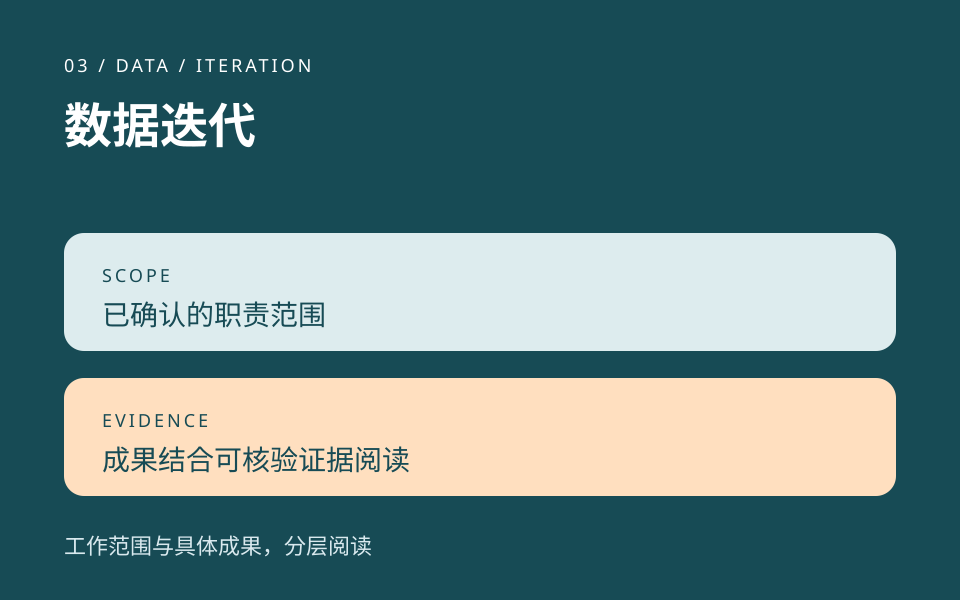

03 / DATA / ITERATION
公开职责摘要数据迭代.
数据迭代属于我在《羊了个羊：对对碰》中的已确认职责。

先说明职责，再讨论结果
这个节点说明我承担的数据迭代职责。具体成果需要结合问题、判断、调整和可核验的结果来阅读，不能由任职或职责范围直接推出。
适合进一步交流的问题
- 数据帮助识别了什么问题？
- 如何把观察转化为需要验证的设计判断？
- 调整前后有哪些可核验的对照？
这些是面试交流的问题线索，用于展开讨论。
03 / DATA / ITERATION
公开职责摘要数据迭代属于我在《羊了个羊：对对碰》中的已确认职责。

这个节点说明我承担的数据迭代职责。具体成果需要结合问题、判断、调整和可核验的结果来阅读，不能由任职或职责范围直接推出。
这些是面试交流的问题线索，用于展开讨论。